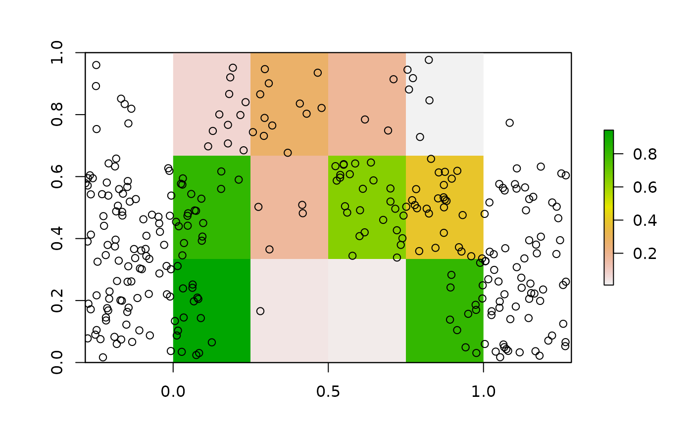

Simulate points using input raster as weights
Source:R/set_points_from_raster.R
set_points_from_raster.RdThis function simulates point patterns in space using the values of an input raster as weights or probabilities for selecting a point in a given location. It was designed to simulate points based on neutral landscape models but it works with other input rasters as well.
Details
The function works by first selecting random pixels in the landscape and finding their centers, then adding random variation within each pixel to define the final point locations. It was based on this StackExchange very useful answer from "Spacedman": https://gis.stackexchange.com/questions/224321/randomly-generate-points-using-weights-from-raster
TO IMPROVE: implement with terra package
Examples
#-----
# minimal example
# example based on
# https://gis.stackexchange.com/questions/224321/randomly-generate-points-using-weights-from-raster
library(raster)
#> Loading required package: sp
#>
#> Attaching package: ‘sp’
#> The following object is masked from ‘package:amt’:
#>
#> bbox
#>
#> Attaching package: ‘raster’
#> The following object is masked from ‘package:amt’:
#>
#> select
#> The following object is masked from ‘package:dplyr’:
#>
#> select
# raster
set.seed(12)
r <- raster::raster(matrix(runif(12),3,4))
# points
pts <- set_points_from_raster(r, n_features = 300)
# plot
raster::plot(r)
points(pts)

# with terra
r <- terra::rast(r)
# points
pts <- set_points_from_raster(r, n_features = 300)